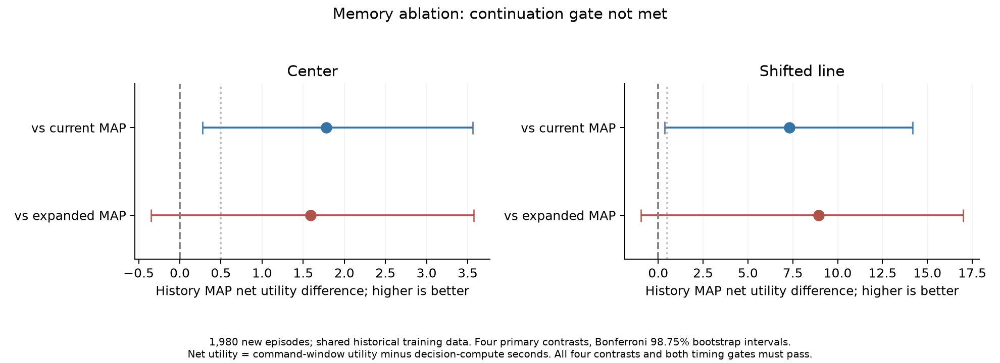

Local language controller
Qwen3-4B on Apple Silicon. 2 kills, 8.17 game seconds; 20.61 wall seconds. Playback is at game speed. A single development demonstration.
BROWSER DECISION LAB
Give a small local model context, a question, and candidate answers. Inspect every score.
About 350 MB of model weights on first use; allow about 1.5 GB of GPU memory. Downloads start only when you load the model.
No model loaded. Your inputs are processed in a local browser worker; model and runtime files come from public hosts.
Two to eight choices. Include an “insufficient information” option yourself if useful.
Load the model and score a decision.
All candidate scores will appear here.
Scores are relative to your supplied choices. They are uncalibrated and do not establish correctness or success. A small model may misunderstand your instruction.
The worker reads first-position candidate logits, then samples and discards one token. No explanation is generated. Timing includes tokenization, a model step, GPU-to-CPU readout, and scoring; first use can include compilation. Inputs are not saved by this app. Export is optional.
MEASURED, NOT ASSUMED
In 1,980 new Doom episodes, causal history improved net utility over the original model by +1.78 in Center and +7.30 in Line. Comparisons against an equally sized current-only model remained inconclusive. The predeclared continuation gate was not met, so adaptive-compute experiments stopped.

The browser language model is separate from the small numerical models used in these Doom experiments.
RECORDED LOCAL GAMEPLAY
These are recorded episodes, not a live browser Doom engine. Both controllers consume structured game observations rather than pixels.
Qwen3-4B on Apple Silicon. 2 kills, 8.17 game seconds; 20.61 wall seconds. Playback is at game speed. A single development demonstration.

A separate 5,253-parameter model: 16 kills in 23.1 game seconds. Trained to imitate a rule controller; it does not interpret arbitrary English.